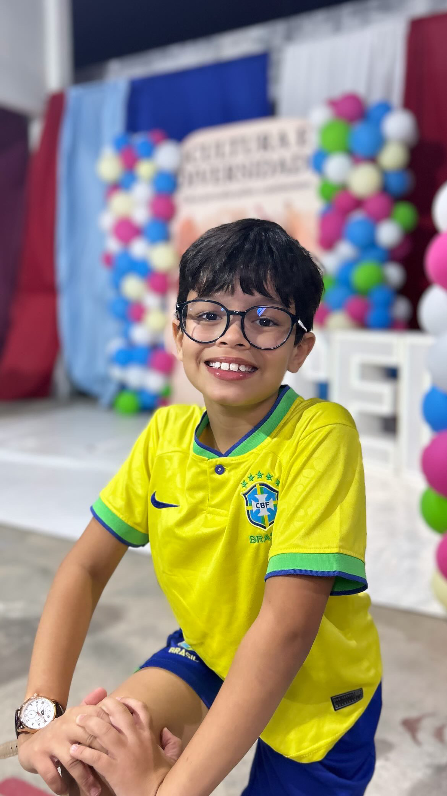
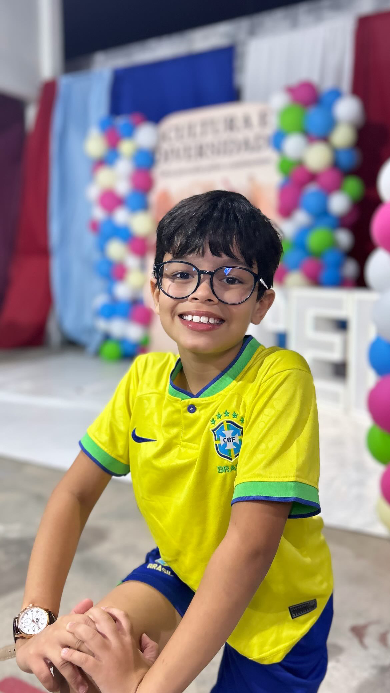

Há mais de 20 anos transformando vidas.
O Centro de Renascer está há mais de 20 anos transformando vidas por meio da educação. Com uma metodologia de ensino inovadora, buscamos preparar os alunos para enfrentar os desafios do presente e do futuro.
Da educação Infantil ao 9º ano, oferecemos uma formação completa, unindo conhecimento, valores e cidadania. O ensino é pautado pelo Amor e pela excelência, princípios que estão no coração da nossa missão.
Corpo ativo, mente ativa.
Por meio das práticas esportivas, os alunos desenvolvem o trabalho em equipe, o respeito, a cooperação e a autoconfiança. Aqui, o corpo se fortalece, a mente se equilibra e o coração aprende a vencer com alegria.
Educação de Qualidade
Apoio Pedagógico
Nosso compromisso é garantir que todos avancem com confiança, segurança e sucesso em sua trajetória escolar.
Ensino Bilíngue
O ensino do inglês e espanhol é valorizado desde as séries iniciais. Desenvolvemos habilidades linguísticas essenciais para o futuro.
Laboratórios Modernos
Com espaços de aprendizado prático, estimulamos a pesquisa e o raciocínio científico desde cedo.
Projetos que Transformam
Na Escola Renascer, os projetos pedagógicos despertam talentos e fortalecem a identidade cultural dos alunos. Literascer, Expo Renascer e Renascer Arte são exemplos que unem conhecimento, arte e cultura em uma experiência inspiradora.
 
